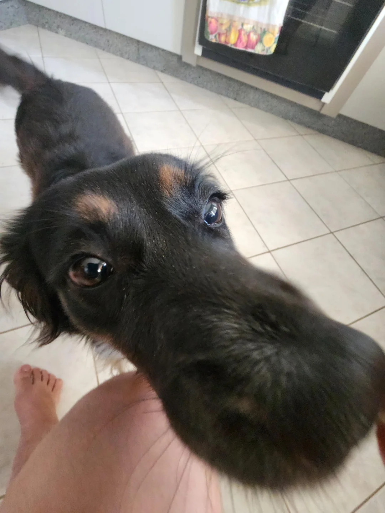

🐾 Nick procura um lar! 💕
Nick tem 2 anos e é um cachorro curioso, carinhoso e cheio de energia! Está sempre por perto, com o focinho
atento a tudo — especialmente se tiver um petisco envolvido. 😋
É dócil, adora companhia e promete encher sua casa de amor e alegria. Já está vacinado e pronto para ser
adotado.